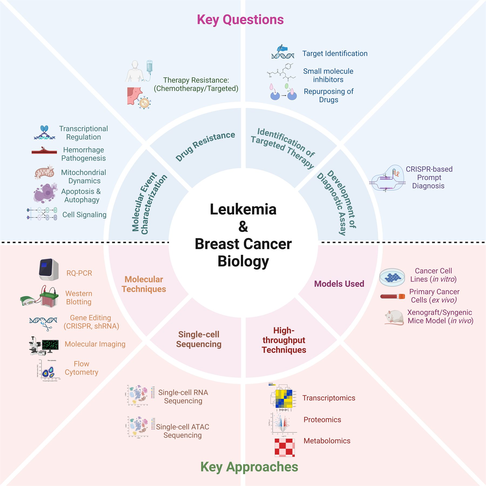

Decoding disease mechanisms
We have mapped the genomic architecture of leukemia, identifying how specific DNA motifs and external factors trigger disease progression, giving clinicians more accurate tools for risk stratification.
Cell & Tumor Biology Group
We study why blood and breast cancers escape targeted therapy, and turn those answers into new drug combinations and affordable, rapid diagnostics for patients in India and beyond.
About the lab
Our laboratory is committed to unraveling the molecular basis of disease mechanisms and resistance to targeted therapies in acute myeloid leukemia and breast cancer, using cancer cell lines, primary patient samples, and murine models.
In high-risk acute promyelocytic leukemia, our research integrates proteomics and single-cell genomics to uncover the mechanisms driving coagulopathy-related early mortality, and to identify clinically relevant druggable targets.
By integrating molecular biology with translational research, the lab provides a framework for understanding and treating hematological malignancies (AML, APL and multiple myeloma) and breast cancer, and has delivered scalable solutions for cancer diagnosis and treatment.
Research
Five connected themes take us from fundamental mechanism to diagnostics and therapies designed for real clinical settings.
We have mapped the genomic architecture of leukemia, identifying how specific DNA motifs and external factors trigger disease progression, giving clinicians more accurate tools for risk stratification.
We identify the transcriptional and metabolic pathways cancer cells use to survive therapy. Showing that combinations such as Venetoclax-based regimens can bypass resistance offers a clear path to new clinical trials.
Our RAPID-CRISPR platform gives highly sensitive, rapid and low-cost detection of leukemia fusion isoforms, bringing precision diagnosis to hospitals regardless of their infrastructure.
Using advanced genome engineering, including CRISPR screens and prime editing, our team studies how genetic variants translate into disease phenotypes, so that therapeutic strategies build on the latest advances in precision oncology.
Our work is translational at its core. We focus on cost-effective biomarkers and scalable diagnostic assays that address India's healthcare priorities, reducing the economic burden on patients while improving survival.

Translational impact
We work alongside India's biotechnology and pharmaceutical sectors to move discoveries out of the laboratory and into the clinic.
Acute promyelocytic leukemia is a medical emergency: with timely diagnosis and treatment, cure rates exceed 90%. We developed an affordable, rapid and highly sensitive CRISPR-Cas12-based assay that detects all major PML::RARA isoforms, with the potential to save hundreds of lives every year.
In partnership with Aurigene Oncology, our work led to a novel covalent CDK7 inhibitor for acute myeloid leukemia, a disease with limited treatment options. It synergises with Venetoclax to overcome resistance and is being advanced toward Phase I clinical trials.
Advancing the fundamental understanding of leukemogenesis.
Novel drug combinations to tackle therapeutic resistance.
Low-cost, high-sensitivity diagnostics such as RAPID-CRISPR.
Sustainable cancer care solutions for India's healthcare ecosystem.
Principal Investigator
Associate Professor & Principal Investigator, ACTREC, Tata Memorial Centre
Dr. Syed K. Hasan obtained his PhD and postdoctoral training in molecular hemato-oncology at the Faculty of Medicine and Surgery, University of Rome Tor Vergata, Italy, in the laboratory of Prof. Francesco Lo-Coco. His notable contributions include elucidating therapy-induced PML/RARA formation through targeting of topoisomerase II, and the mechanisms underlying chromosomal translocations in therapy-related leukemias.
After receiving the European Hematology Association Partner Fellowship and the DBT Ramalingaswami Fellowship, he started his independent laboratory at ACTREC. His lab dissects the mechanisms of targeted therapy and therapy resistance in acute myeloid and acute promyelocytic leukemia, and explores the tumor-suppressor functions of pregnancy zone protein in breast cancer.
PhD, Hemato-Oncology, University of Rome Tor Vergata, Italy
Homi Bhabha National Institute, Mumbai (since 2017)
Molecular diagnosis and translational research in blood and breast cancers, with a focus on single-cell genomics and CRISPR/Cas-mediated genome editing.
As SOHO Ambassador, Dr. Hasan represents the Society of Hematologic Oncology, a leading global organisation in partnership with MD Anderson Cancer Center, Houston, in recognition of the lab's contributions to research and patient care in hematologic malignancies.
People
PhD students, fellows and staff working across leukemia biology, genome engineering and translational diagnostics.
Funded projects
Supported by national agencies, philanthropic trusts, international societies and industry partners.
Publications
Our work appears in leading hematology and oncology journals.
Join us
We welcome enquiries from motivated postdoctoral fellows, project fellows and trainees interested in leukemia biology, genome engineering and translational cancer research. Please write to us with your CV and a cover letter describing your interests.
Contact
Principal Investigator · Office KS-243
ACTREC, Tata Memorial Centre